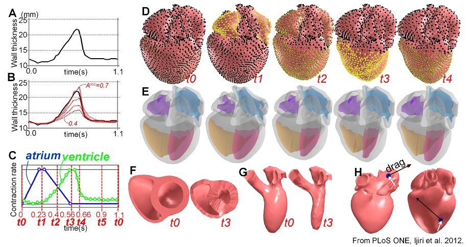
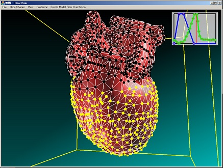
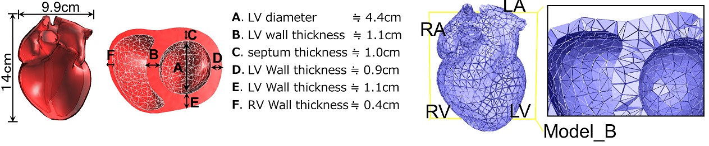

projects
back to top
A Kinematic Approach for Simulating Cardiac Beating Motion
Abstract
Computer simulation techniques for cardiac beating motions potentially have many applications and a broad audience.
However, most existing methods require enormous computational costs and often show unstable behavior for extreme
parameter sets, which interrupts smooth simulation study and make it difficult to apply them to interactive applications.
To address this issue, we present an efficient and robust framework for simulating the cardiac beating motion. The global
cardiac motion is generated by the accumulation of local myocardial fiber contractions. We compute such local-to-global
deformations using a kinematic approach; we divide a heart mesh model into overlapping local regions, contract them
independently according to fiber orientation, and compute a global shape that satisfies contracted shapes of all local
regions as much as possible. A comparison between our method and a physics-based method showed that our method can
generate motion very close to that of a physics-based simulation. Our kinematic method has high controllability;
the simulated ventricle-wall-contraction speed can be easily adjusted to that of a real heart by controlling local
contraction timing. We demonstrate that our method achieves a highly realistic beating motion of a whole heart
in real time on a consumer-level computer. Our method provides an important step to bridge a gap between cardiac
simulations and interactive applications.
概要
心臓の拍動は，心筋収縮により引き起こされる．拍動時，心筋は螺旋状の筋線維走向に沿って局所的に収縮し，この局所収縮の積み重ねが心臓全体の捻る動きを生成する．
心臓拍動を計算機上でシミュレートすることには，心臓メカニズム解明の他にも，デジタルコンテンツ作成，医師患者間コミュニケーション，教育用ツールなど様々な応用が存在する．
本研究では，上記の中でも，インタラクティブアプリケーションのための，効率性と安定性の高い，心臓拍動シミュレーションフレームワークを提案する．
具体的には，我々は，従来の物理モデルではなく，幾何制約に基づく手法により，拍動動作を記述する．
各アニメーションステップにおいて，まず心臓モデルの局所領域を独立して収縮変形する．
次に，外力や速度を考慮しながら，すべての局所領域をなるべく満足するようにモデル全体を変形させる．
これは，近年Computer Graphics業界で発表され，注目を集めているShape matching dynamics法を応用したもので，高速かつ無条件に安定に，拍動動作の計算が行える．
また本研究では，心筋線維走向や心筋の収縮タイミングを編集できるユーザインタフェースも合わせて提案する．
提案システムでは，コンシューマレベルの計算機で，実時間で心臓拍動を計算でき，
さらに，拍動する心臓の一部を引っ張ったり、心筋を局所的に壊死させたりするインタラクションも可能である．

Materials
Open Access (paper and video)
youtube movie (by Digital contents expo)
[1] Ijiri T, et al. (2012) A Kinematic Approach for Efficient and Robust Simulation of the Cardiac Beating Motion. PLoS ONE 7(5): e36706. doi:10.1371/journal.pone.0036706.
@Article{Ijiri_PLOSONE12,
author = {Takashi Ijiri, Takashi Ashihara, Nobuyuki Umetani,
Takeo Igarashi, Ryo Haraguchi, Hideo Yokota, Kazuo Nakazawa},
title = {{A Kinematic Approach for Efficient and Robust Simulation of the Cardiac Beating Motion}},
journal = {PLoS ONE},
year = {2012},
volume = {7},
number = {5},
pages = {},
note = {}
}
Heart Model and Simulator
Download model
2015/1/14 Simulator and heart models v4(.zip)
Simulator
We provide our heart simulator only for demonstration purpose [1].
Do not distribute the software.
“HeartSim_SimpleLV” contains our simulator with simple LV model
“HeartSim_Heart” contains our simulator with a full heart model
(generated based on the heart model in [1]).
See ReadoMe_Simulator in the zip for more detail.

Full Heart Model (surface / tetra)
1. License
All heart models in the foder “./HeartModel” are constructed
by Takashi Ijiri and distributed with Public Domain License.
We appreciate if you provide a citation to the paper [1]
(but it is not required).
2. Heart Model Construction
We modeled a heart surface model “version4.blend” with
blender_2.69.
We used the full heart model based on MRI data in [1] as a guide for modeling.
We also referred anatomy text book [2,3] during modeling.
We convert the blender file to wave front obj “version4Mesh.obj”.
We next apply Laplacian smoothing 1 time to it and reduce its vertices
by using Quadratic Edge Collapse Decimation on Mesh Lab
http://meshlab.sourceforge.net/ obtain (target face number: 3000)
to obtain “version4Mesh_lap1_col3000.obj”.
Finally, we manually removed a self-intersection to obtain “version4Mesh_lap1_col3000_manu.off”
and convert this surface model to tetrahedral mesh model “Model_A.ele & Model_A.node” by
TetGen .
We subdivided the Model_A to obtain Model_B and Model_C.
See
here for detail on file format (.ele/.node).
The heart models should be re-scaled before use so that its vertical axes are 14cm.
If the models are scaled appropriately, it has the following characteristics;

back to top